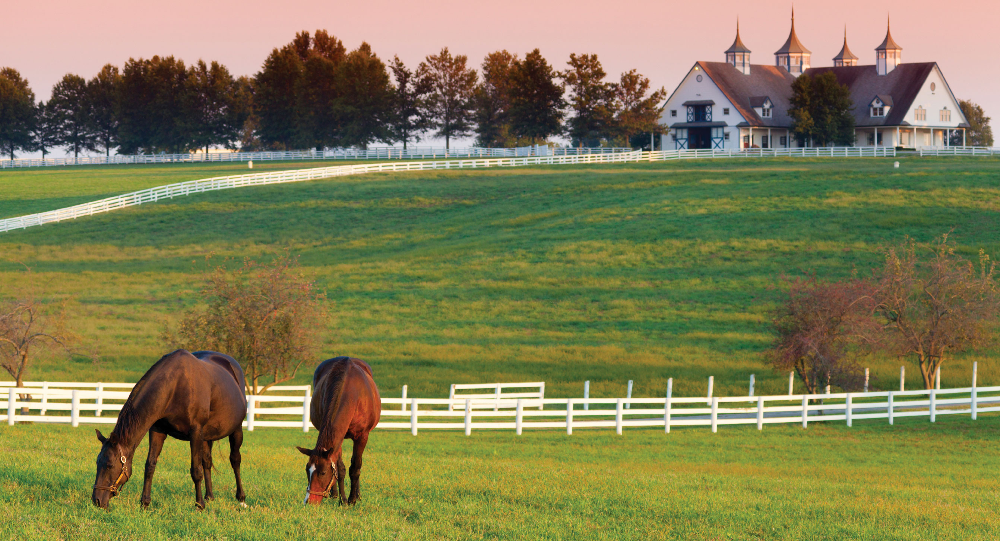
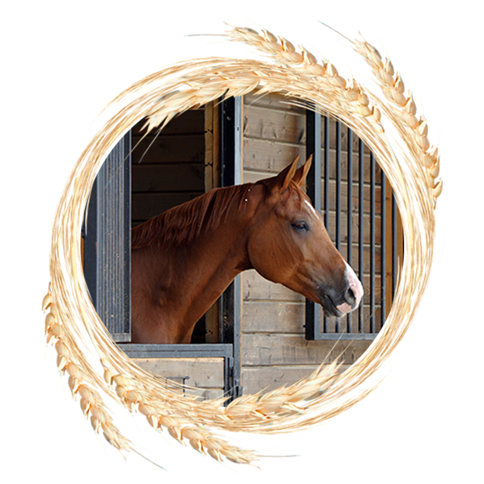
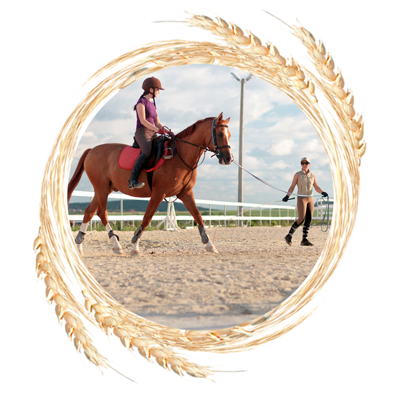
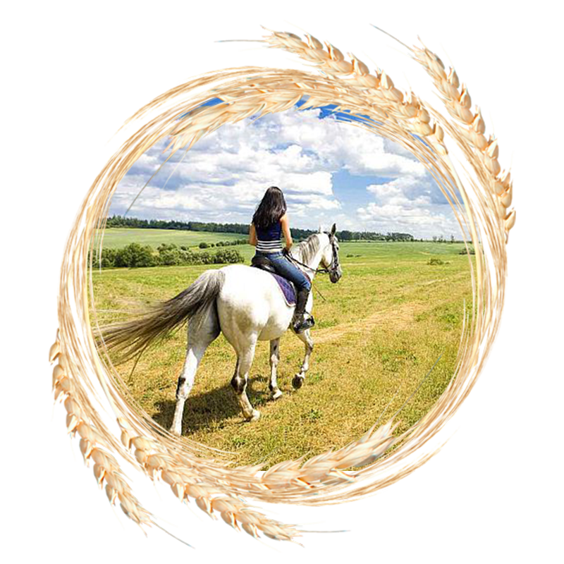
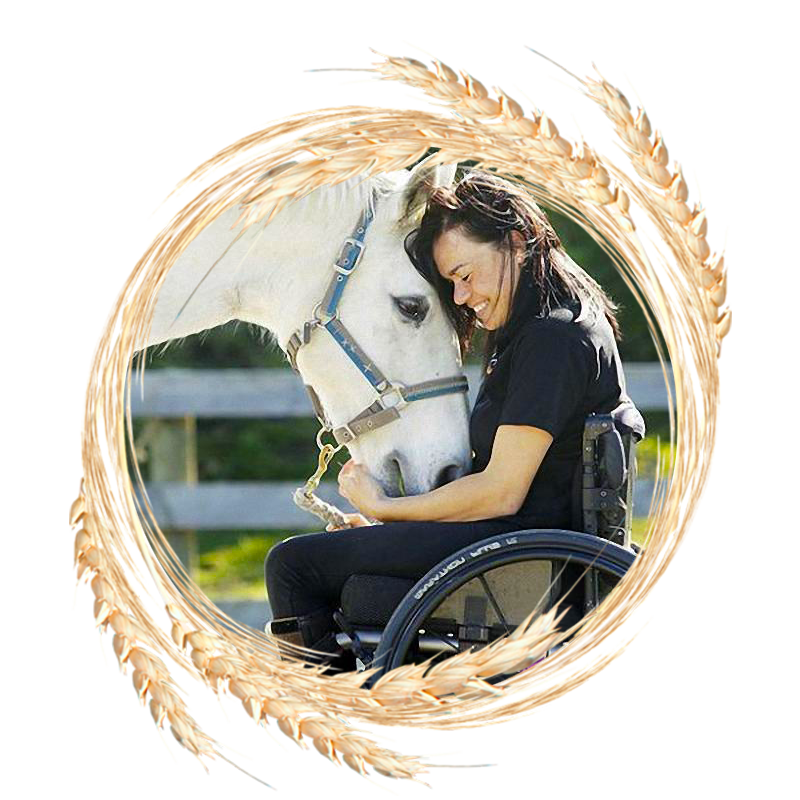
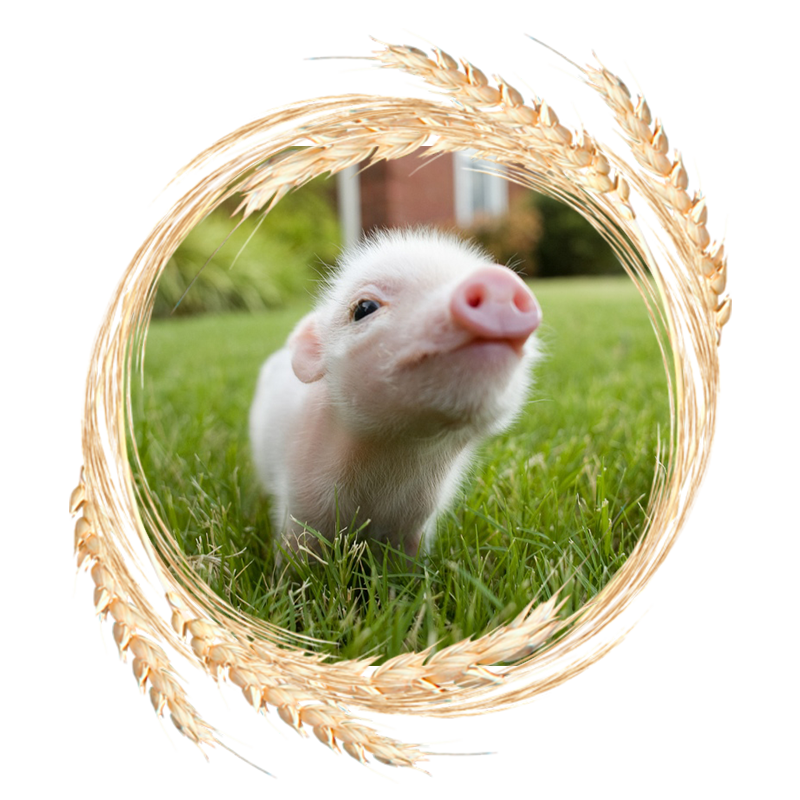

{kind=link}
{kind=link}
{kind=link}
{kind=link}

Наш клуб расположен в близи поселка Лесколово (пол часа езды от севера города). В экологически-чистом месте, участок обрамляют лес и ровные поля, по которым можно вдоволь скакать, даже есть несколько троеборных барьеров.

Для Ваших лошадок комфортные домашние условия, неограниченный выгул, сено в волю, квалифицированный персонал, с многолетним опытом работы с лошадьми и всадниками.
Конюшня деревянная из оцилиндрованного бревна, утепленная, из экологически-чистых дышащих материалов, на 34 головы.
Дополнительным плюсом является трасса без пробок!
* присоединившимся к нам до Нового Года скидки и специальные предложения
|  |
ПостойДоверив нам своего копытного друга, можете быть уверенны в его благополучии - никто из наших подопечных не будет обделен любовью и заботой. Особые условия для лошадок-пенсионеров, молодняка и поней. |
|  |
ОбучениеНаши граммотные инструктора и тренера помогут Вам научиться чувствовать и понимать лошадь, стать партнёрами в достижении спортивных высот и просто отдохнуть от городской суеты. |
|  |
Прогулки в поляОкружающие нас, бескрайние поля и леса не оставят Вас равнодушным, и Вам обязательно захочется вернуться и снова ощутить это непередоваемое чувство полёта и единства с природой, которое подарят Вам наши питомцы. |
|  |
ИппотерапияЛошади обладают чудесным свойством - они лечат. Подарите своему ребёнку радость и волшебство, а наши милые, спокойные лошадки и опытный персонал помогут Вам в этом. Даже самые робкие детки почувствуют себя уверенней. |
|  |
Мини-фермаПлотнее соприкоснуться с миром животных, Вашему ребёнку помогут питомцы на нашей чудесной мини-фермы. С ними будет интересно пообщаться не только детишкам, но и их родителям. |